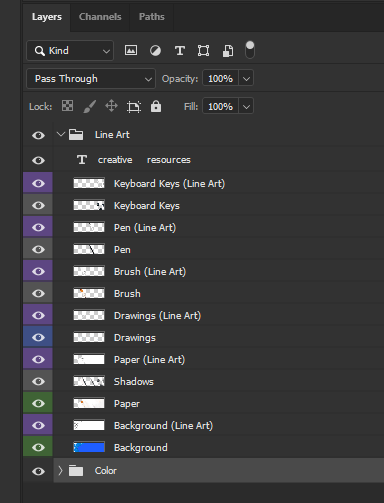
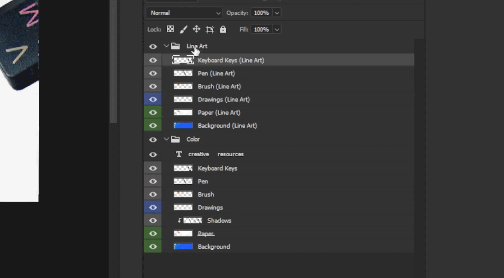

Workflow - Production Pipeline
Efficiently handle working with Photoshop documents in a production pipeline
Goal of this Section
- Create organized layered files (next person editing them can understand them)
- Avoid any and all repeat work
- Favor non-destructive edits
- Version control your own work in a safe way (no overwriting your 'main' document)
File Handling Methods
- A) Single PSD, export static PNG updates as
YYYYMMDD_COMPANY_PROJECT_ASSET-NAME.VERSION.png - B) Multiple PSD's, saved and archived for each revision as
YYYYMMDD_COMPANY_PROJECT_ASSET-NAME.VERSION.psd
Choose A) if:
* It looks like it will be easy to preserve multiple changes within a single PSD
* Disk / storage space is a concern
Choose B) if:
* The project has multiple components that need preserved or reused
* Elements exist that would be difficult or time consuming to recover after substantial editing
* Disk / storage space is not a concern
It's recommended you start with Method 2 below and see how the workflow of the project proceeds.
You can always easily switch back to Method 1 if it makes sense.
Method 1: Static Updates -> Layered Finals
- Final delivery: Color or B&W or Line Art
- Interim updates requiring only static images for: Line Art (and/or) B&W (and/or) Color
- Simply generate Line Art from Color when it's needed
- Simply generate B&W from Color when it's needed
1. Comp the rough image with layers in full color from the beginning
* Saves time later
* Does not cost much additional time up front
* Allows more flexibility and forgiveness with editing
* Allows generating line art easily
* Prevents doing the same work multiple times in the traditional way
TIP: don't worry with trying to make the first drafts photo-perfect, this can be built up over rounds of edits.
2. Color code or name and organize layers logically
* Each element (e.g. character, object) share unique colors or folders, for example:
- Character Layers = BLUE
- Background Layers = GREEN
- Prop / Object Layers = GRAY
* Quickly identify the same element across multiple PSD files
* Easy drag & drop of elements into other PSD files

3. Edit color layers directly, and duplicate any critical layers before editing, at all stages
We edit color or b&w layers directly because line art is generated from them.
* Prevents duplicate work and human error in editing line art
* Prevents needing to reapply edits made to line art, to color later
* Keep backups of critical layers that need changed
- Roll back when necessary
4. Generate & Export Line Art
Duplicate all of the current layers into a single flat layer, and turn this layer into line art using the Photocopy filter.
This layer exists above the Color / B&W using the Multiply layer blending mode.
4.1) `Shift+Left Click` select all layers
4.2) `Ctrl+j` duplicate
4.3) `Shift+Left Click` select all layers to be flattened
4.4) `Ctrl+e` flatten them into one layer simultaneously (prevents blending modes from modifying the image)
TO DO: image
If information beyond the canvas should be kept:
- Proceed to
4.5 - When adjusting framing, or moving layers around, the basic line art filter beyond the canvas is already done for you.
If you do not need information beyond the canvas edges:
Ctrl+a,Ctrl+c,Ctrl+vto select all, copy, and paste only whats visible within the canvas dimensions of the flat layer- Removes excess data outside of canvas
- Makes line art generation consistent (line thickness, quality)
- You are essentially cropping this layer to the canvas dimensions without cropping other layers
- Keep an extra copy of the flat layer we just created
- Delete the original flat layer (with data beyond the canvas)
TO DO: image
4.5) `Filters > Filter Gallery > Sketch > Photocopy, Darkness: 8, Detail: 4`
* If needed: `Edit > Stroke Width: 2px, Location: Center, OK`
* It helps to map `Filter > Last Filter` to `Shift+Ctrl+F`
TO DO: image
4.6) Ink + make any extra adjustments to the line art manually
4.7) `File > Export > Quick Export as PNG`
TIP: You may also want to File > Automate > PDF Presentation... using all of the PNG's or images created, so the data can easily be shared as a single document.
How this saves time editing line art:
- You can hide and preserve line art layers at each stage with little disk space cost
- When a new round of revisions occurs, follow all of the steps in section 4
- You can duplicate the previous layer of line art to use as a base in the next round of revisions
- Simply mask out the parts of the image you need / want to keep from the previous line art iteration into this new one
- Flatten the latest changes with the duplicate just created
- You'll now have the previous version(s), plus the latest version, of the line art as layers
Essentially any manual adjustments here can be ported over to the next round of changes without always needing to redo them.
IMPORTANT
Create a backup file locally for each export or major changes.
This way if you do accidentally save over your 'main' document, you have one additional set of backups.
Ctrl+c>Ctrl+vthe file in your folder window.- Rename it to indicate it's a backup (how you name it is up to you, examples are below)
# Renaming the file in the folder window:
original-file.psd -> original-file.bak.psd
# With PowerShell:
Copy-Item .\yyyymmdd_Company_Project_Asset_Version.psd -Destination .\yyyymmdd_Company_Project_Asset_Version.bak.psd
# With bash:
cp ./yyyymmdd_Company_Project_Asset_Version.psd ./yyyymmdd_Company_Project_Asset_Version.bak.psd
Jump to section 5 below for steps on exporting the layered final.
Method 2: Fully Layered Updates
Use these steps as guidelines anytime a layered document will be a deliverable.
- Final delivery: Color or B&W or Line Art
- Interim updates requiring full PSDs
- Simply generate Line Art from Color when it's needed
- Simply generate B&W from Color when it's needed
Overview:
* When making any edits, use the 'main' PSD
* When editing line art, make line art-specific changes to the Line Art layers as needed
* When overhauling line art, edit the color layers
* Regenerate line art from color layers using the `Photocopy` filter
1. Comp required layers in color from the beginning
* Essentially a color rough
* This guide assumes there will be edits
* Preserve as much detail as you can within the time you have
TIP: don't worry with trying to make the first drafts photo-perfect, this can be built up over rounds of edits.
2. Group all current color layers into a "Color" group
3. Generate Line Art
Duplicate the "Color" group into a working "Line Art" group.
Rename the layers with a pre/suffix indicating they're line art.
How to do this quickly:
- Type the pre/suffix
- Highlight the text by holding
[Shift]and moving the[Arrow Keys]left or right Ctrl+ccopy the pre/suffix to clipboard[Tab]to switch to the next layer down- Use the Left or Right Arrow Key to jump to the front / back of the text
Ctrl+vto paste the pre/suffix
What this looks like:
* Choose a color to color code all line art layers with
* This way you can quickly see which layers are line art in the layer pane

WHY?
* Line art typically must be handled separately from color / b&w for efficient editing
* Keeps all iterations (line art, b&w, color) of the image contained to one PSD
* Preserves color or comp'd layers
- Ideal if the updates need to be in line art
- Ideal if the final must be photo real or painted, and NOT line art
* Ease of switching from line art to color / b&w
* Ease of making edits to color layers -> regenerate line art from color layers
* Easily preserve manual edits made to line art
To do this, follow these steps:
3.1 Generate line art from each duplicate layer in the Line Art group
* `Filters > Filter Gallery > Sketch > Photocopy, Darkness: 8, Detail: 4`
* `Edit > Stroke Width: 2px, Location: Center, OK`

The above Photocopy settings of Darkness=8 and Detail=4 work well with HD / 4K resolution
If the layer exceeds the boundaries of those dimensions you may need more or less detail
You'll want to run the filter once by navigating the menus (Filters > Filter Gallery > Sketch > Photocopy) so it's loaded as the last filter used. Then if you have a hotkey to execute the last filter used, you can quickly generate line art for numerous layers. Adjust the size of the layer and run the filter, followed by Ctrl+z if necessary, to see what's working.
TIP: It helps to map Filter > Last Filter to Shift+Ctrl+F or whatever works for you.
3.2 For each line art layer; set layer blending mode to Multiply
Example below:
Example above, continued:
* Duplicate the color group folder once more
* Move these duplicates into the line art group, beneath their related layer
* This is so the line art is displayed correctly above each color layer
* You can then delete the empty 'color group copy' folder once those layers are in place
3.3 Adjust the line art above the color / b&w as needed
* If delivering line art with a 'subtle wash':
- `Image > Adjustments > Hue/Saturation > Saturation: -100, Lightness: +90`
- Keep in mind if flattening layers with less than 100% opacity, you may need to redo them later
* If delivering b&w or color comps, illustrations, or roughs:
- Set line art layers to Multiply
- Adjust b&w layers with `Image > Adjustments > Levels: Raise|Lower Shadow|Highlight input levels as needed
- Adjust color layers with `Image > Adjustments > Hue & Saturation: Raise|Lower Saturation|Lightness levels as needed
WHY?
- We now have separate, editable, line art layers to work with
- Allows the line art to be the focus
- This gives some definition and visual breakup to the line art layers
- You can later use them above the color layers as the final line art (like shown above).
- Non-destructive edits are ideal, it's assumed there will be some manual line work done which we do not want to redo.
- If you need to flatten the line art into the color / b&w layers, you will do this in a 'shared' PSD file instead of the 'main' document.
TIP: Preserving Line Art Details During Revisions
You can preserve manually added details in the line art by simply masking, then flattening, a copy of the previous iteration into the newly generated line art layer.
TO DO: image
TIP: Reverting to Previous Versions
If a layer needs reverted to an earlier stage, use the previous draft's file to source that layer instead of doubling layers in all working files.
This keeps the filesize small, and the layer structure less cluttered.
4. Save the document (this is considered the 'main' document)
IMPORTANT
From here always do Save as when creating a new document to send to the next person. This prevents you from saving over your main document after potentially flattening layers.
TIP: Create a backup file locally for each export or major changes.
Ctrl+c>Ctrl+vthe file in your folder window.- Rename it to indicate it's a backup (how you name it is up to you, examples are below)
# Renaming the file in the folder window:
original-file.psd -> original-file.bak.psd
# With PowerShell:
Copy-Item .\yyyymmdd_Company_Project_Asset_Version.psd -Destination .\yyyymmdd_Company_Project_Asset_Version.bak.psd
# With bash:
cp ./yyyymmdd_Company_Project_Asset_Version.psd ./yyyymmdd_Company_Project_Asset_Version.bak.psd
5. Create a 'shared' folder, separate from your 'working' folder
* Files exported here will have organized / flattened layers
* A good practice is having directories broken down like this:
- `Working_Files/Draft_X/yyyymmdd_Company_Project_Asset_Version.psd`
- `Shared_Files/Draft_X/yyyymmdd_Company_Project_Asset_Version.psd`
* They mirror each other so you can quickly identify related files
It's not as quick or forgiving to visually inspect files named randomly to find which version is version X.
This holds true when recovering from Dropbox-like cloud backups. You will spend a ton of time manually downloading, and inspecting each iteration. And if you haven't been keeping a good naming convention so far, this will get really confusing really fast after you've looked at 5 versions of the same file.
Ultimately, 'shared' files are specifically for sending to the next person in the pipeline (labeled, organized, color coded, flattened if necessary, etc)
6. 'Save as' When Ready to Share
* `Save as > Shared_Files/Draft_X/yyyymmdd_Company_Project_Asset_Version.psd`
7. Cleanup Layers (in the shared copy)
Flatten the layers as necessary.
Layers should look like:
* Character 1
* Character 2
|_Character 2 Hat
|_Character 2 Prop
|_Character 2 Alternate Hair
* Prop
* Vehicle
* Background
So the file is easy to navigate:
Not like:
* Layer 1 Group
|_Character 1 Edits
|_New Layer (2)
|_Layer 14 Line Art copy 1
|_Layer 15 Line Art (copy)
|_Layer 16 Line Art
|_Layer 17 Color
* Lighting
* Layer (Edit)
* Lighting (Edit) (1) ((1)) (copy) copy
* Character 2 Group
|_Layer 1 Line Art
|_Layer 1 Color
* etc...
Which is completely unreadable:
Proceeding from Line Art to B&W or Color
The process continues to be iterative, but without the additional overhead of preparing Line Art to stand on it's own (separate from the Color or B&W layers underneath).
8. 'Undo' any destructive changes
- Destructive changes made in 3.3 should be undone here
- Typically by adjusting
Brightness / ContrastorLevels
This is done so that when switching to multiply over color or b&w, the 'blank' space inside the line art does not multiply the color / b&w details underneath.